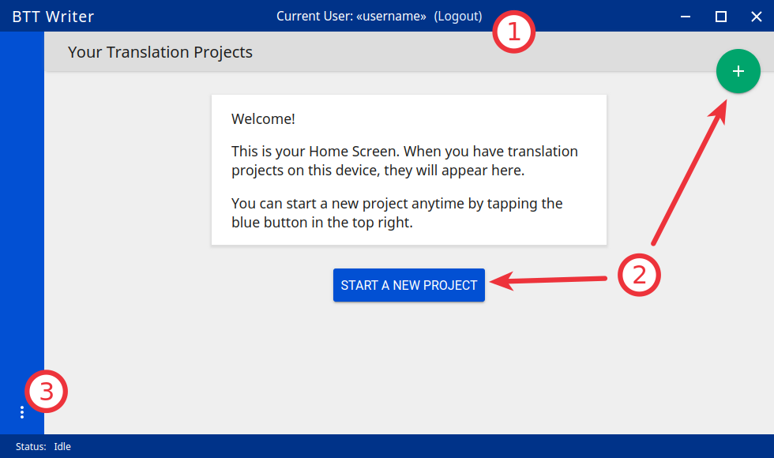
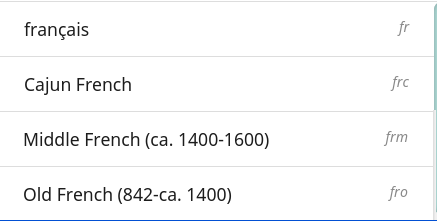

BTT-Writer
In order to complete this section, you will need an email address that you can check while doing this work. (Of course, you will need some kind of Internet connection, too.)
If BTT-Writer will only be used off-line, i.e. there will not be any uploads or downloads, you don’t need an account on WACS, and you won’t need an email for this section. However, the full power of BTT-Writer is only realized when you upload your work to WACS for safe-keeping.
BTT-Writer can be downloaded from GitHub, at https://github.com/Bible-Translation-Tools/BTT-Writer-Desktop/releases/latest or https://github.com/Bible-Translation-Tools/BTT-Writer-Android/releases/latest.
BTT-Writer Desktop and BTT-Writer Android work very similarly, but they are completely different programs. Most of this training is oriented towards use of BTT-Writer Desktop (which can be used on any computer that runs a recent version of Windows, macOS, or Linux). Where there are differences for BTT-Writer Android, we will try to make note of them.
Every current version of BTT-Writer (including for Android) is available for download from Basic Translation Tools https://basictranslationtools.org.
Lab 11: BTT-Writer Lab 1
BTT Writer can be downloaded from many different places.
If you want to download BTT-Writer without using the word “Bible” in your browser, which site should you use?
If you want to be completely sure you have the newest version, which site should you use?
Which site will allow you to download either the Desktop or the Android version of BTT-Writer?
Before continuing the training, make sure you have downloaded the latest version of BTT-Writer
Getting BTT-Writer
Installing BTT-Writer on PC
- There are several different versions of BTT-Writer available. BTT-Writer has versions for Linux, for macOS, and for Windows. In addition, the Windows version comes in both 32-bit and 64-bit versions. Most Windows computers sold in the last 5 years are 64-bit.
Installing on Linux https://youtu.be/8cj7Iwwc20c
Installing on macOS https://youtu.be/Z2mv1uIAE6o
Installing on Windows https://youtu.be/UbX-MIRks6c
Git
The Windows installer installs git along with BTT-Writer. For Linux and macOS, you will need to install it separately. For macOS we recommend the open-source git-scm available from https://sourceforge.net/projects/git-osx-installer/. You can use Apple’s version of git, but the download is over 2GB, so unless you have that kind of data, it’s better to use git-scm if you can.
For versions of BTT-Writer before 1.4.0, macOS and Linux also need a custom .ssh/config file. Updating to the latest version fixes this requirement.
Lab 12: BTT-Writer Lab 2
When installing BTT-Writer for Windows, do you need to install git?
When installing BTT-Writer for Windows, should you choose 64-bit or 32-bit?
What is a reason not to use Apple’s version of git with BTT-Writer?
Before continuing the training, make sure you have installed BTT-Writer on your device.
Installing BTT-Writer for Android
Starting with Version 1.5.1, BTT-Writer Android is again available on the Google Play Store. You can find it by searching for BTT-Writer, or you can use this link: https://play.google.com/store/apps/details?id=org.bibletranslationtools.writer.android
{kind=link}
You can also download an .apk of the program that can be manually installed on an Android device. That is available here: https://github.com/Bible-Translation-Tools/BTT-Writer-Android/releases/latest or at Basic Translation Tools https://BasicTranslationTools.org
Because of changes required by Google, the new version of BTT-Writer will not automatically see your old projects — they must be imported. Also, if your Android device becomes inoperable, there will be no way to recover the translation data. It is no longer in an easy-to-access place. Look at the section on Exporting to learn how to upload to WACS.
There is no version of BTT-Writer for iOS (iPhone or iPad).
Lab 13: BTT-Writer Android
I found BTT-Writer in the Google Play Store. Should I install it from there?
I found BTT-Writer in the Apple iTunes Store. Should I install it on my iPad or iPhone?
What is a good place to get BTT-Writer for Android?
If you are going to be using BTT-Writer on Android, you should install it before continuing this course.
Updates to BTT-Writer
If you want to be notified when there is a new version of one of our programs, the easiest way is to “watch” the download site. This way, you will receive an email when there is a new release.
You do need to have an account on Github in order for them to know where to send the notification, but this account is free.
Please note that if you live in a place where your work is dangerous or illegal it is possible for others to discover which projects you are watching. Be mindful of what is needed for your safety.
We also have a newsletter that you can subscribe to where we mention new releases of BTT-Writer, and they are also mentioned in the Telegram channel.
BTT-Writer for Android will notify you like all other Android updates when one is available, if you install from the Google Play Store.
Lab 14: Updates
How can you be notified when there is an update to BTT-Writer?
What would be a reason not to watch a project on GitHub?
How Do I Get Help to Use BTT-Writer?
We have many videos to help on the MAST Tech Talk channel on YouTube: https://www.youtube.com/@masttechtalk1916
We also have many helps at https://techadvancement.com
The Help Desk is always ready to help with questions and problems: helpdesk@techadvancement.com
Finally, we have an active help community on Telegram[^2]
Lab 15: How Do I Get Help?
What are three ways to get help for using BTT-Writer?
“Logging In” to BTT-Writer
If you have already created an account on WACS, use the first option.
If you have not yet created an account on WACS, use the second option. Creating an account on WACS is explained here
Both of these options require an Internet connection, and will connect you to bibletranslationtools.org. If you need to hide this connection, be sure to connect a VPN before using one of these options.
{kind=link}
The third option can be used if there is no Internet available, but should always be temporary. For example, you can use it for a typist that you will collect the typing from manually, or if you are away from Internet temporarily. You should always log out before letting someone else use your computer. This allows them to enter their name into the “Contributors” of the project they work on, and keeps it straight where a project will be uploaded. It also protects your account from unauthorized uploads.
Lab 16: “Logging In” to BTT-Writer
If you have not yet created an account on WACS, you should do so before continuing with this training.
Practice logging in with a WACS account, logging out, and then logging in with a “local account”.
{kind=link}
Important Agreements
CC BY-SA
All of the content of BTT-Writer is either in the Public Domain or licensed with the Creative Commons license[^3]: https://creativecommons.org/licenses/by-sa/4.0/ This means that the translation does belong to the people who did the work, but they are making this translation openly available with few limitations. There are three restrictions on this license.
BY: Someone who uses the translation must say who he got it from. We call this “attribution”.
SA: Someone who uses the translation must make the end result available under the same license. This is called “share alike”.
The licensor cannot take away these freedoms as long as you follow the license terms.
Lab 17: CC BY-SA
What is a license?
What does CC mean in our license?
What does BY mean in our license?
What does SA mean in our license?
Statement of Faith
The Statement of Faith makes sure that we are all working together towards the same goal. While we have seen fruitful work in translation from non-believers, we don’t believe it’s best.
We insist that certain things are true, and not negotiable.
The Bible is divinely inspired by God and has final authority. This means that we cannot impose our opinions or our culture on the content of the Bible.
God is one and exists in three persons: God the Father, God the Son, and God the Holy Spirit.
Because of the fall of man, all humans are sinful and in need of salvation.
The death of Christ is a substitute for sinners and provides for the cleansing of those who believe.
By God’s grace, through faith, people receive salvation as a free gift because of Jesus’ death and resurrection.
The resurrection of all at the end of time — the saved to eternal life and the lost to eternal punishment.
Lab 19: Statement of Faith
What is the purpose of the Statement of Faith?
Translation Guidelines
The Translation Guidelines state that a translation needs to be Accurate, Clear, and Natural. This is not normally something the technician needs to worry about, but it is part of the agreement to use the software.
Accurate
Accurate translations effectively communicate the intended meaning of the original, divinely inspired text. An accurate translation expresses the meaning the author intended for the original audience in the original context. 1. To the extent that is possible, nothing is added, misconstrued, or deleted from the original message. 2. It does not recast the meaning of the original text to make it more relevant to the contemporary audience. 3. An accurate translation does not distort the meaning in order to favor a specific interpretive perspective. It should be free from theological, cultural, or personal biases. 4. An accurate translation communicates historical events and facts accurately.
Clear
Clear translations will use whatever language structures are needed to help readers easily read and understand it.
A clear translation may use as many or as few terms as necessary to communicate the original meaning as clearly as possible.
Making a clear translation does not mean that the translator clarifies something that is ambiguous in the source text.
Making a clear translation does not mean that the translator gives the reader a specific interpretation for every passage where meaning is genuinely debated. ### Natural Natural translations use language forms that are reflect the way the target language is used in corresponding contexts.
Natural Bible translations sound like they were produced by an adult native speaker who speaks and/or writes well.
A natural Bible translation does not use expressions that are particular to their own culture in order to make the translation appear natural.
It is more important for a portion of Scripture to be translated accurately than for it to sound perfectly natural to everyone who reads it. We believe that a translation has the highest likelihood of being good quality when after applying the guidelines above, the following are completed:
It is tested and approved by believers of the language community and their church leaders.
Ongoing revisions and improvements are made.
Lab 18: Translation Guidelines
What are the three goals of the Translation Guidelines?
What is the overall goal of the Translation Guidelines?
BTT-Writer Home Screen
① Logout is only used when a different translator is going to use the program, or to switch between on-line and off-line use. You do not need to log out to use the program off-line.
② Create a new project by clicking either the green button at the top right, or the Start a New Project button.
Once a project has been created, the project list fills in the space where the Start a New Project button is, so you can only use it for the first project.
③ The “3 dot” , or “Hamburger” , menu, We will normally refer to the Hamburger menu as the 3 dot menu.
, menu, We will normally refer to the Hamburger menu as the 3 dot menu.
Occasionally, BTT-Writer will get confused about whether you’re logged in to WACS or not. If this happens (and you can’t upload) you can often fix the problem by clicking Logout (①) and logging back in again. You will need to click I Agree to the three agreements each time you log in. Logging in uses your Internet connection.
Lab 20: BTT-Writer Home Screen
Do you need to log out if you are using BTT-Writer without Internet?
What’s another name for the “3 dot” menu?
What might cause you to need to log out?
{kind=link}
{kind=link}
{kind=link}
A Final Word About Language Codes
Language codes are either set by an International Standards Organization (codes like zh, en, or pt-br) or by language researchers. Once a code is set for a language it should not be changed. The code is needed to uniquely identify the language. It is not intended to be the same as what the people call their language. In this example, Modern French uses the French name for the language, français, including the lower case first letter.
For the other versions of French, the English name is used, along with date information for older versions of French. If the French people decided that they wanted all of these languages to be labeled in French, they could contact Translation Services. The names would then be adjusted in PORT. However, the language codes would remain the same. It is not the Tech’s responsibility to change a language name or code.
Lab 31: Language Codes
Where does BTT-Writer get its language code information from?
Who can change the information about a language in BTT-Writer?
How can a language group change the code used for their language?
Creating a Project
When creating a translation project in BTT-Writer, first you must choose the target language. You can scroll down and select a language from the list, or you can start typing the name or the code of the language.
The best practice is to type the code. You should always have the code from the Project Manager before the typing begins. There are many languages in the world with the same name, but each language has only one code.
If, for some reason, you are forced to begin a project for a language that doesn’t have a code, try to pick a code that will be easy to spot and change later on. A sign language code is one suggestion, since sign language translations are done using video instead of BTT-Writer. Icelandic Sign Language, for example, uses the code icl. If you don’t use the correct code for a language, you should always make a note. One place you can put a note that will stay with the project is in the Contributors field. Say something like, “Using icl code for Ugaritic language in Syria”. That way, it will be simpler for someone to fix the code later.
① The language name and ② code will be displayed as you are asked to choose a Testament to translate from. Finally, you will be able to choose a book to translate.
Lab 32: Creating a Project
What information do you need to know before you can begin a translation project?
What is the best way to search for a language in the list?